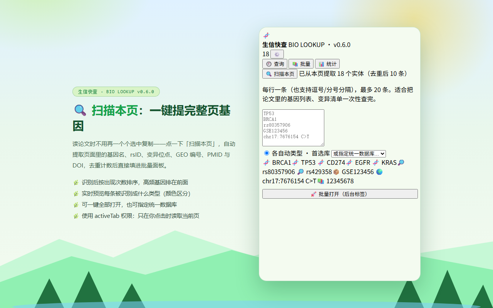
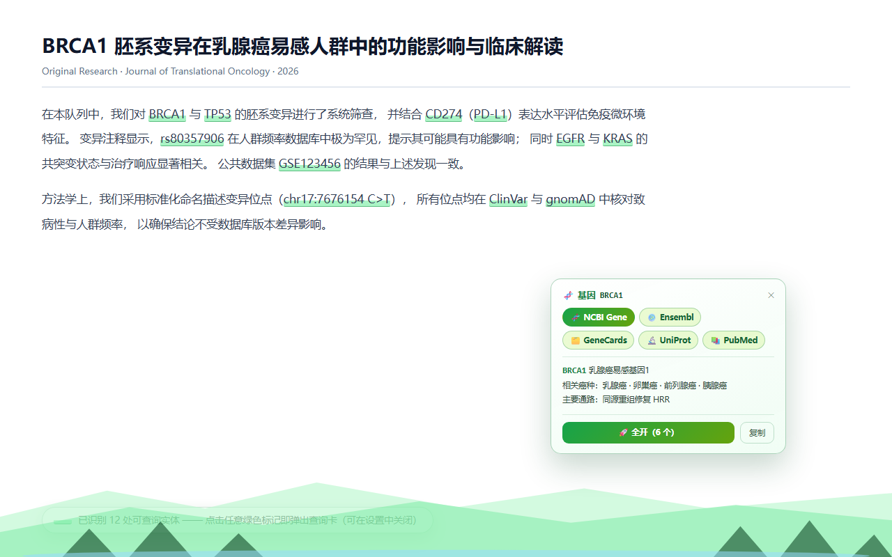
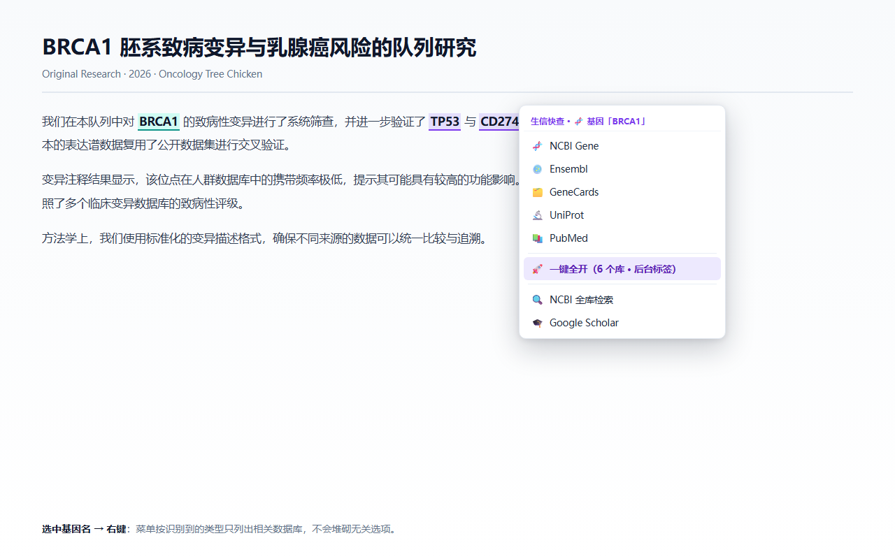
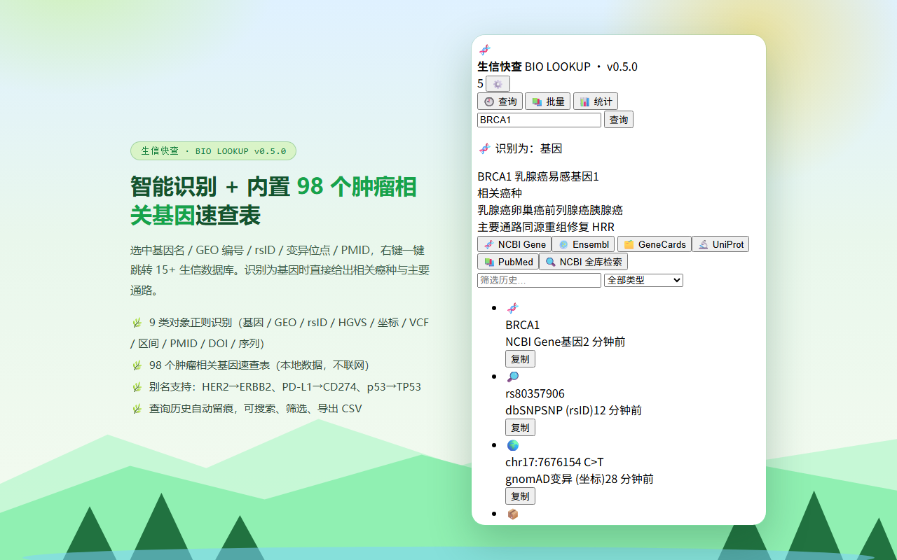
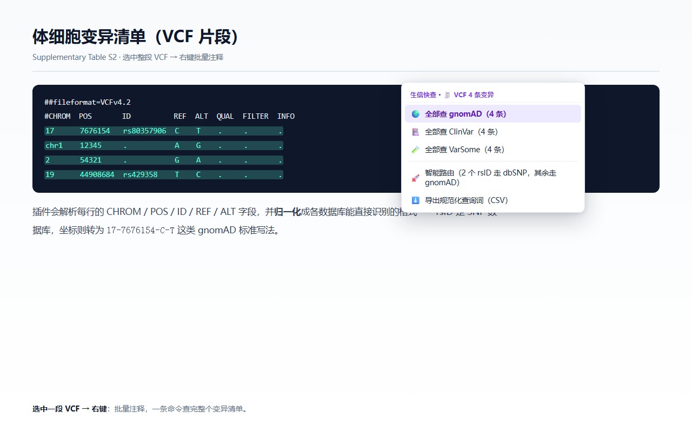
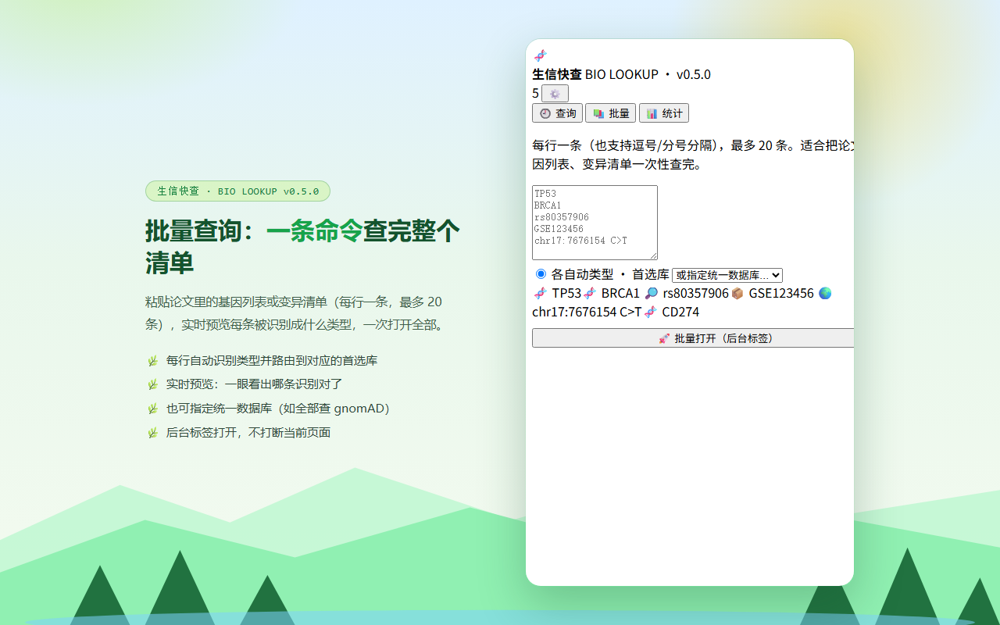
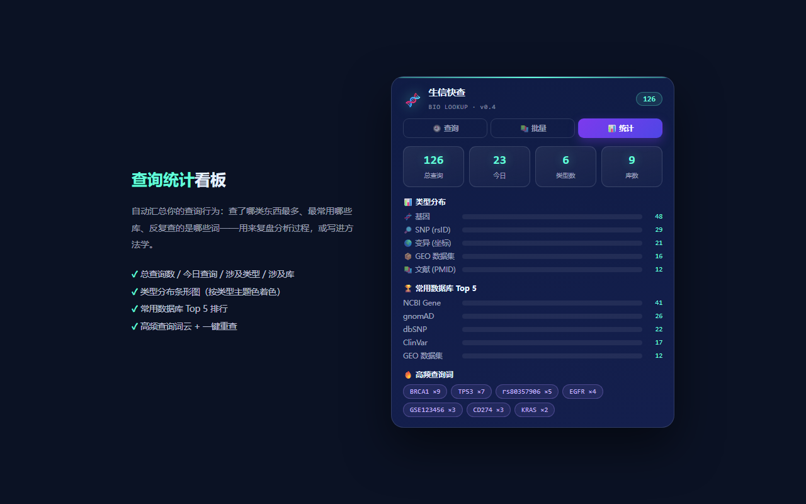
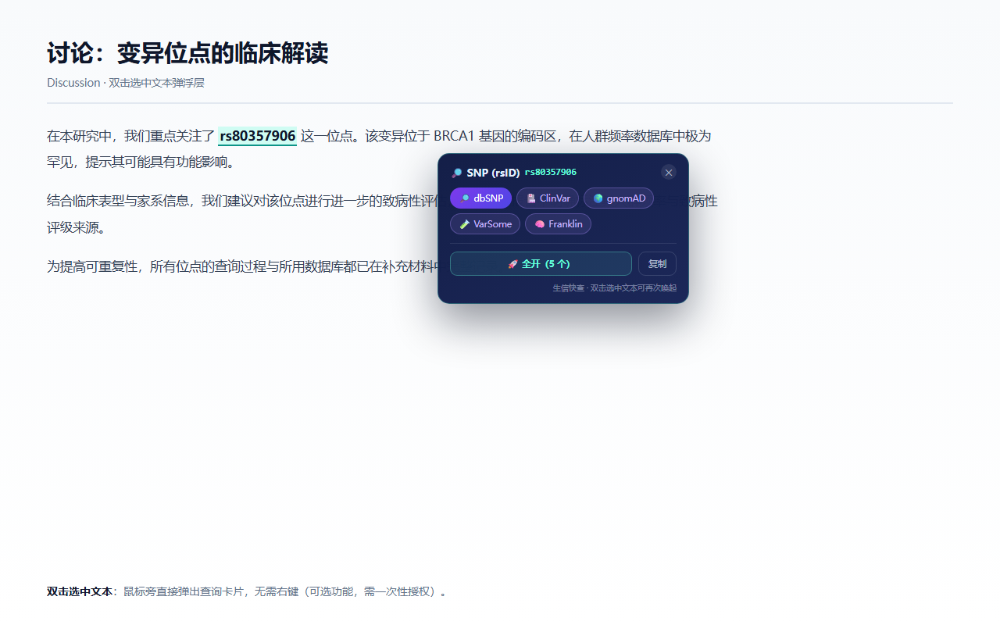

选中基因名 / GEO 编号 / rsID / 变异位点 / PMID → 右键一键跳转 15+ 生信数据库。智能识别类型、内置 98 个肿瘤相关基因速查表、VCF 批量注释、序列工具、Zotero 联动、查询历史与统计。明亮自然山水主题，零外部依赖。
一个基因名要在 NCBI Gene、Ensembl、GeneCards、UniProt、PubMed 之间反复开 5 个标签页；一个 rsID 要在 dbSNP、gnomAD、ClinVar、VarSome 之间来回跳。现有插件要么只支持基因，要么菜单塞满所有库。Bio Lookup 换了个思路：先识别你选中的是什么，再只给你看相关的库。
基因 / GEO / rsID / 变异(HGVS·坐标·VCF) / 区间 / PMID / DOI / 核酸序列，靠正则引擎判别，菜单只列相关库。
变异解读要同时看人群频率 + 致病性 + 原始记录——一次点击并行打开 5 个相关库的后台标签。
选中一段 VCF → 按 CHROM/POS/REF/ALT 解析，坐标归一化为 gnomAD 标准格式，一条命令查完整个清单。
自动记录查询词/类型/库/时间，可搜索、筛选、重查，导出 CSV 用于方法学留档。
98 个肿瘤/临床相关基因的相关癌种与主要通路，选中即显示——纯本地数据，不联网、不请求外部 API。
11 类对象各配主题色贯穿菜单/卡片/图表；统计面板看类型分布、常用库 Top5 与高频词云。
一键提取当前网页里所有基因 / rsID / 变异 / 数据集编号 / PMID / DOI，去重计数后填入批量面板，一次查完。使用 activeTab 权限，只在你点击时读取当前页。
可选功能（默认关闭）：网页里的已知基因名与编号自动加绿色标记，点一下即弹查询卡片。只标记本地词表的高置信目标，点击即查、不联网。
选中 DNA 序列即得长度 / GC 含量 / 反向互补链 / RNA 转录，一键复制。








| 类型 | 数据库 |
|---|---|
| 基因 | NCBI Gene · Ensembl · GeneCards · UniProt · NCBI Protein · PubMed |
| SNP / 变异 | dbSNP · ClinVar · gnomAD · VarSome · Franklin · UCSC |
| 数据集 | GEO · SRA Run Selector · ArrayExpress |
| 文献 | PubMed · Europe PMC · Google Scholar · Zotero（本机库） |
| 序列 | NCBI BLAST |
已提交 Microsoft Edge Add-ons 审核（Store ID ORDCKFTQ6T96）。上线后点链接即可一键安装，自动更新、重启不丢、无需开发者模式。
chrome://extensions；Edge 打开 edge://extensions⚠️ 加载后请勿移动 / 重命名 / 删除该文件夹 —— 浏览器记录的是文件夹绝对路径，移动后扩展会立即消失。
核心功能只需右键菜单与本地存储权限，默认不读取任何网页内容；页面浮层与 Zotero 联动均为可选，开启时才申请权限。所有历史与配置只存在你的浏览器本地，无服务器、无遥测、无追踪代码。查看完整隐私政策 →